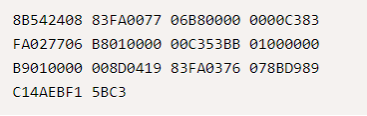

Bilo da se jezik smatra visokom ili niskom razinom (ili negdje u sredini), riječ je o apstrakciji. Strojni kod nema apstrakciju - sadrži pojedinačne upute proslijeđene računalu. A budući da se strojevi odnose samo na brojeve, oni su zastupljeni u binarnom (iako se ponekad zapisuju u decimalnom ili heksadecimalnom zapisu).
U strojnom kodu, operacije moraju biti točno specificirane. Na primjer, ako se informacije moraju preuzeti iz memorije, strojni kod morat će obavijestiti računalo gdje u memoriji može naći tu informaciju. Pisanje izravno u strojnom kodu je moguće, ali vrlo teško.
Programski jezici niske razine dodaju malo apstrakcije na strojni kod. Ova apstrakcija skriva posebne upute za strojni kod iza deklaracija koje su više čitljive ljudima. Assembly jezici su jezici najniže razine uz strojni kod.
U kodu stroja možete zapisati nešto poput "10110000 01100001" - ali assembly to može pojednostaviti na "MOV AL, 61h".
